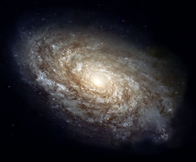

When Hubble developed his classification system for galaxies based on their appearance in optical light, he divided the spirals into those in which the spiral arm radiated from a central bulge (classic spirals), and those where the arms radiated from a central bar (barred spirals). Classic or barred notwithstanding, all spiral galaxies can broadly be described visually as having a central bulge of old stars surrounded by a flattened disk of young stars, gas and dust.
These two regions can be seen clearly in colour images of face-on spirals. The central bulge or bar is yellow indicating older stars, while the bright nebulae and young blue stars formed from gas and dust in the galaxy trace out the spiral arms within the disk. Dust is also visible in edge-on spirals as dark lanes, similar to the dark lanes we see in our own Milky Way when we observe the night sky.

Spiral galaxies are classified as Sa/SBa, Sb/SBb or Sc/SBc (classic/barred) according to the tightness of their spiral, the clumpiness of their spiral arms, and the size of their central bulge. These differences can be traced back to the relative amounts of gas and dust contained within the galaxies. Only about 2% of the mass of Sa spiral galaxies is present in the form of gas and dust. Since these are essential ingredients in the formation of new stars, this means that a relatively small proportion of Sa galaxies are involved in star formation. This leaves these galaxies dominated by their large bulges of old stars, and their disks relatively small containing faint, smooth, tightly wound arms.
In contrast, Sc spirals contain about 15% gas and dust meaning that a relatively high proportion of the mass of the galaxy is involved in star formation. For this reason, Sc galaxies have small bulges, and are dominated by their loosely wound arms that are often resolved into clumps of stars and HII regions. It comes as no surprise that the proportion of young stars increases from Sa to Sc galaxies.
Spiral galaxies come in a wide range of sizes, from 5 to 100 kiloparsecs across, have masses between 109 and 1012 solar masses, and luminosities ranging from 108 to 1011 time that of the Sun. The majority of spiral galaxies rotate in the sense that the arms trail the direction of the spin. By measuring the rotation curves of spiral galaxies, we find that the orbital speed of material in the disk does not fall off as expected if most of the mass is concentrated near the centre. From this it is clear that the visible portion of spiral galaxies contains only a small fraction of the total mass of the galaxy, and that spiral galaxies are surrounded by an extensive halo consisting mostly of dark matter.
See also: nebulae.